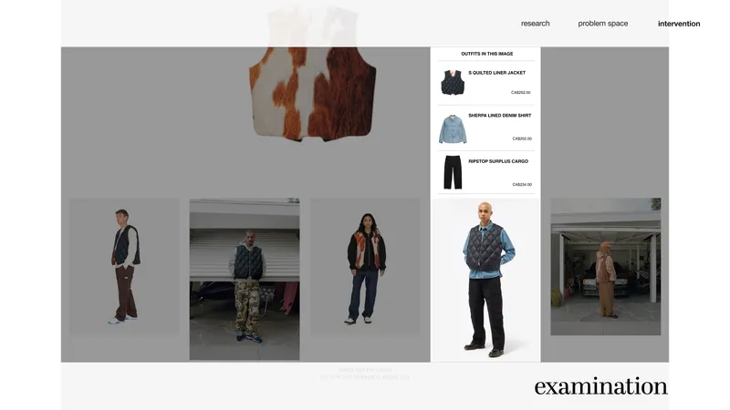

A Cognitive Science and Interactive Arts & Technology student designing interfaces at the intersection of human behaviour and digital technology.
I believe that by understanding how people perceive, process, and interact with information, I can create interfaces that are visually compelling and cognitively intuitive, merging research-based design methods with expressive visual craft.
- 01 Research Heuristic evaluation, think-aloud testing, and insight synthesis grounded in cognitive science.
- 02 Interaction Prototyping expressive, intuitive interfaces in Figma, ProtoPie, and UXPin.
- 03 Visual Design Crafting cohesive visual systems with the Adobe Creative Suite.

Stüssy Web Experience Redesign
An interactive web experience featuring a virtual mannequin tool, curated outfit examples, and a community gallery — helping newcomers to streetwear culture shop with confidence.
View Case Study →Let's create something impactful.